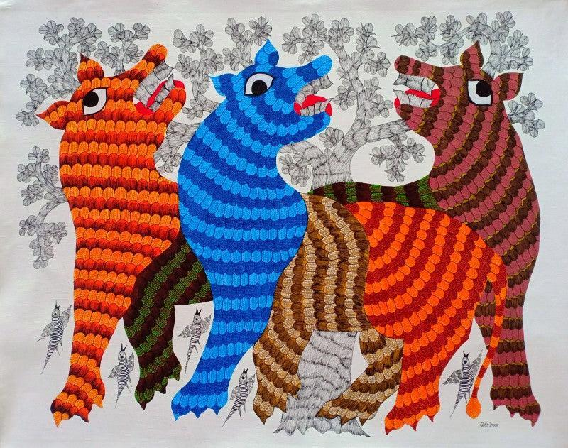

Gond art feels like nature breathing through patterns. Animals, trees, birds—everything is alive, not just physically but spiritually. The surfaces are filled with dots, lines, and textures that seem to vibrate with energy. The romance here is deeply connected to nature and life itself. It’s not about human relationships, but about the bond between humans, animals, and the natural world. A tree is not just a tree—it has a soul; a fish is not just a fish—it carries movement and rhythm. The art feels alive, almost like it’s telling stories without words.
Gond art comes from the Gond tribe, one of the largest tribal communities in India. • Traditionally painted on walls and floors of homes • Created during festivals and rituals • Believed that painting nature brings good luck and protection Originally, it was a ritual and storytelling tradition, not meant for galleries. Over time, it moved to paper and canvas, gaining national and international recognition.
Gond art is known for its unique texture and detailing: • Dot and Line Patterns Surfaces are filled with tiny dots, dashes, and lines to create texture • Bright, Contrasting Colors Red, yellow, green, blue—used boldly • Nature-Based Themes Animals, birds, trees, and myths • No Empty Spaces Similar to Madhubani, the entire surface is filled • Flowing Forms Shapes are curved and organic, giving a sense of movement
Gond art is practiced by artists from the Gond tribe. Some modern artists brought it global recognition: • Jangarh Singh Shyam – pioneer of contemporary Gond art • He transformed traditional wall art into modern canvas paintings Today, Gond art continues as both a traditional and contemporary art form.